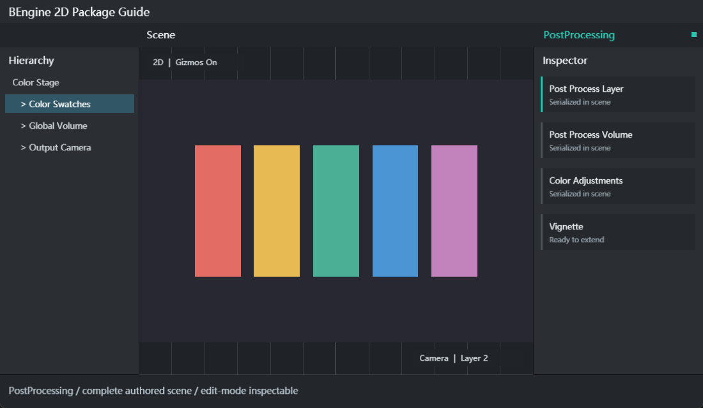

Post Processing
Camera post-processing with Fix64 profile blending, global or circular local volumes, layer filtering, color adjustment, bloom and vignette on RHI render targets.

运行、分包与验证
PostProcessLayer 挂在 Camera2D 上，volumeTrigger 默认为相机 Transform，volumeLayer 使用引擎 LayerMask。Volume 的 priority、weight、blendDistance 与 isGlobal 控制叠加。每个效果参数的 value 和 overrideState 分别决定数值及是否参与覆盖。
快速开始
- 在输出相机添加 PostProcessLayer，新建全局 Volume 并赋一个 Profile；先仅调整 colorAdjustments.saturation，以便清楚比较开关效果。
- 将另一个 Volume 设为局部，设置 center/radius/blendDistance；移动 volumeTrigger 检查过渡，不要只改变渲染相机可见层。
- 最后逐个启用 bloom 与 vignette，在明暗区域检查颜色、边缘和开关成本。像素艺术优先保持 bloom 强度为零，再按美术需求增加。
组件与 API
PostProcessLayer, PostProcessVolume, PostProcessProfile, ColorAdjustments, Bloom, Vignette, ParameterOverride<T>
var layer = camera.gameObject.AddComponent<PostProcessLayer>();
var volume = scene.CreateGameObject("Grade").AddComponent<PostProcessVolume>();
volume.profile = new PostProcessProfile();
volume.profile.colorAdjustments.saturation.value = (Fix64)(-30);
volume.profile.colorAdjustments.saturation.overrideState = true;扩展与平台接口
运行时使用 Fix64 和主线程 BTask；通过平台服务读写资源，不直接创建主机文件或网络连接。编辑器代码放在 Editor 装配，停止场景时取消请求并解除订阅。
资源分包与更新
AssetImporter.assetBundleName/assetBundleVariant 指定资源组；BuildPipeline.BuildAssetBundles 接受导入设置或 AssetBundleBuild[]。跨包引用记录为目录依赖。RequiredBundleNames 控制首次安装，IAssetBundleDownloadManager 下载可选组和依赖。已安装可选包参与之后的版本更新。
行为边界
API 接近 Unity Post Processing Stack 的 Layer/Volume/Profile 模型，不包含完整 URP/HDRP Volume 系统。局部范围是二维圆形，没有任意 Collider 体积。Bloom 是有限采样邻域效果，不是多层 HDR 金字塔。GPU 后端必须支持 RenderTargets 与 SampledTextures；Vulkan 已实现离屏附件、嵌套目标恢复和格式相关管线缓存。
排查与验证
- 效果不出现：检查 Layer enabled、Volume enabled/weight、层掩码、Profile.active 与参数 overrideState。
- 游戏变糊：先关闭 Bloom 对比原图；Point 纹理加 PixelPerfectCamera 只能避免采样缩放模糊，不能消除主动添加的后处理扩散。
- 屏幕全黑：检查平台 RHI 支持和着色器资源打包，验证离屏纹理后再检查最终合成。
- 对同一场景捕获关闭/启用调色的帧，检查中心像素实际改变且没有黑屏。
- 局部 Volume 外、边缘和内部各取样，检查权重连续且只影响选中的层。
- 重复改变窗口尺寸并启用/禁用效果，检查目标尺寸、管线格式和资源释放。
Package Manager 导入示例：ColorVolumes、BloomVignette。在 Project 打开场景，检查 Hierarchy/Inspector，比较 Scene 与 Game，Play 后查看 Console，Stop 后再次运行。
本包增加配置、运行时、验证三份 Skills。详细说明见 运行与扩展指南。